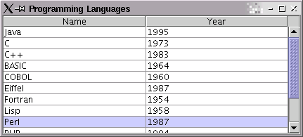

In this 3-step tutorial, we use Glazed Lists to mimic the functionality of a
vanilla AbstractTableModel. Once we have that in place, we can
begin to exploit Glazed Lists' more advanced features.
We are going to create a simple Programming Language browser, so that we can review our favourite programming langauges.
Create a BasicEventList and add elements to it, just like you would
an ArrayList or LinkedList. BasicEventList
implements the List interface, so you should have no problem learning
its API.
|
Although Glazed Lists will take care of managing table, it is still necessary to do some table set up. Glazed Lists needs to know column names and how to get a value for a particular column. For this, it is necessary to implement the TableFormat interface.
|
Note that the getFieldValue() method asks you to get an Object for a
column cell, given an object that models an entire row. In this case, the
ProgrammingLanguage object models the entire row, and for column 1, we
want the getYear() attribute of that ProgrammingLanguage.
Now that we have the data and display ready, it is time to display our table in a
JFrame. The ListTable provides a JTable for displaying
any EventList. It uses optimized table events to give you the best
performance for dynamic data.
|

So far we haven't taken advantage of any advanced features of Glazed Lists.
But with this simple framework in place, it is now straightforward to add filtering, sorting or
querying to the table. We can begin to layer mutation lists between the
BasicEventList and the ListTable. If necessary, we can
replace the manually-managed BasicEventList with a
DynamicQueryList which can periodically fetch updates from a database
or other source. And should we decide to display the data in another form such
as a JComboBox, that is now straightforward as well.
| Tutorial Home | Part 2 - Text Filtering >> |
|---|